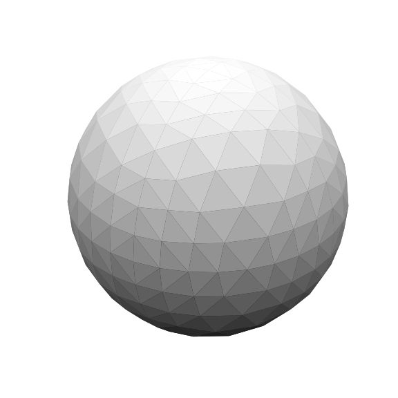
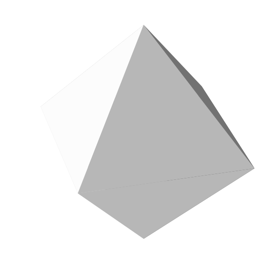
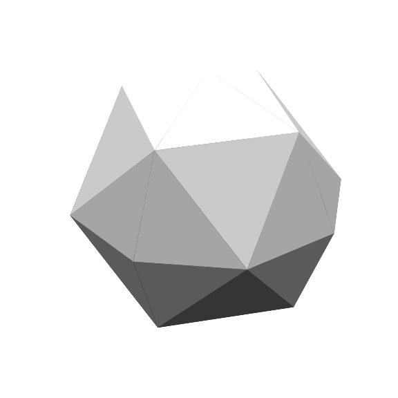
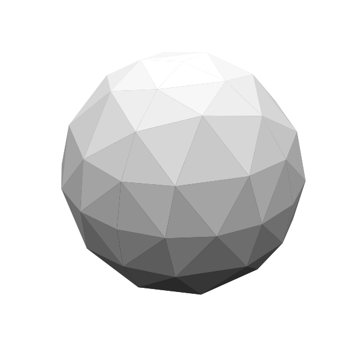
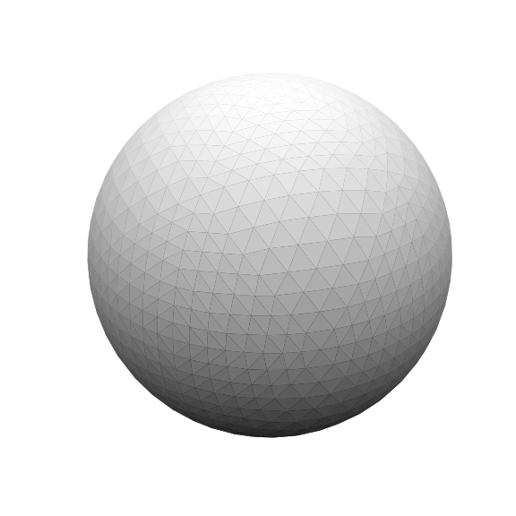
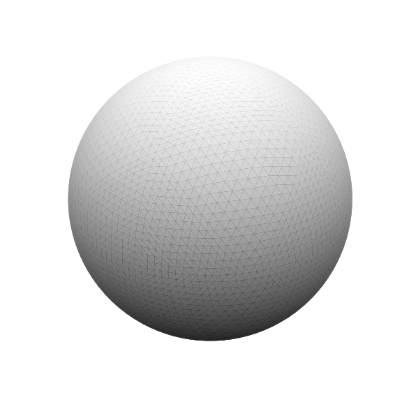

Hierarchical Triangular Mesh (HTM)
HTM is space-partitioning algorithm for spherical data utilizing subdivisions of the octahedron.
This is an implementation, not to be confused with the original
A Hierarchical Triangle Mesh (HTM) is a data structure used to represent and manage large-scale triangle meshes efficiently, particularly in computer graphics, geographic information systems (GIS), and 3D modeling.

Overview
A Hierarchical Triangle Mesh (HTM) is a data structure used to represent and manage large-scale triangle meshes efficiently, particularly in computer graphics, geographic information systems (GIS), and 3D modeling.
There are multiple implementations for spherical data and this is just one of them.
HTM organizes a triangle mesh in a tree-like hierarchy, allowing:
- Efficient Level of Detail (LOD) rendering.
- Fast spatial queries (e.g., collision detection, ray tracing).
- Reduced memory usage through shared vertices and structure reuse.
Structure
- Base mesh: Coarse approximation of the shape, usually using large triangles.
- Refinement hierarchy: Each triangle can be subdivided (typically into four) to increase detail.
- Tree representation: Often a quadtree or binary triangle tree.
Subdivision Scheme
Each triangle is split into four smaller triangles by connecting the midpoints of its edges.
Applications
- Terrain rendering (e.g., planetary-scale surfaces)
- 3D visualization and simulation
- Progressive mesh transmission
- Mesh simplification and compression
Advantages
- Scalable detail management
- Fast access and culling
- Good for streaming and progressive loading
Limitations
- More complex to implement than flat meshes
- May require careful management to avoid cracks and artifacts between LOD levels
Related Concepts
- Quadtrees
- BSP trees
- Progressive meshes
- Geometry clipmaps
Background
Space partitioning algorithms are used everywhere there is spatial data. Usecases are but not limited to databases and 3D models. These are oftentimes great for eucleidian data but will not work for inherently spherical data. The technical reader may point out that this algorithm is not pure spherical aswell since it contains distortions but it is “spherical-enough”.
Datastructure and Algorithms
The datastructure is based on the quadtree approach where the space is divided recursively in space.
Layout
The first 6 iterations of the HTM
|  |  |  |
|---|---|---|
| Depth = 0, faces = 8 | Depth = 1, faces = 32 | Depth = 2, faces = 128 |
|  |  | |
|---|---|---|
| Depth = 3, faces = 512 | Depth = 4, faces = 2048 | Depth = 5, faces = 8192 |
The number of faces for each full iteration of the HTM follows the following pattern:
\[ N_{faces} = 8 \cdot 4 ^ d \]
Bit representation
Bit 0
The first bit represents the pole, where 0
translates to the northern hemisphere and a 1 the
south.
Bit 1 - 2
The following two bits corresponds to each of the four sides where 0 is \[ 0 \leq \theta \leq \frac{\pi}{2} \]
Bit 3 -
The Following number of bits depends of the size of the integer, using 64 bit, the id may hold up to a depth of 30.
Motivation
We needed a datastructure that provides the following:
- Fast neighbor lookup and at multiple levels
- Optimized for spherical sensor data (\(\theta,\phi\))
For our peak segmentation on realtime spherical data. The naive way is to precompute the LUT, but that still requires memory access and is not cache friendly for our implementation.
Neighbors
The benefit of the HTM recursive structure is that there is a predefined structure to find the neighbors. In the current constellation, the neighbors can.
The trivial Case
If the current node is the center of the triangle, that is its
ID ends with a 0, its immediate neighbors are: \[ \text{ID}+i, i = 1,2,3 \],